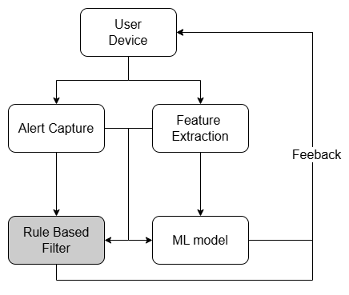

<!DOCTYPE html>
<html lang="en">
  <head>
    <meta charset="UTF-8" />
    <meta name="viewport" content="width=device-width, initial-scale=1.0" />
    <link rel="stylesheet" href="assets/css/styles.css" />
    <!-- =====BOX ICONS===== -->
    <link
      href="https://cdn.jsdelivr.net/npm/boxicons@2.0.5/css/boxicons.min.css"
      rel="stylesheet"
    />
    <title>Business Case Details - Sai's Portfolio</title>
  </head>
  <body>
    <!--===== HEADER =====-->
    <header class="l-header">
      <nav class="nav bd-grid">
        <div>
          <a href="index.html" class="nav__logo">Sai Satya B V</a>
        </div>
        <div class="nav__menu">
          <ul class="nav__list">
            <li class="nav__item">
              <a href="index.html#home" class="nav__link">Home</a>
            </li>
            <li class="nav__item">
              <a href="index.html#business-cases" class="nav__link">Back to Cases</a>
            </li>
          </ul>
        </div>
      </nav>
    </header>

    <main class="l-main">
      <!--===== CASE DETAILS =====-->
      <section class="case-details section" id="case-details">
        <h2 class="section-title">Business Case: Defender Avoiding Fake Alerts</h2>
        <div class="case-details__container bd-grid">
          <div class="case-details__img">
            
          </div>
          <div>
            <h3 class="case-details__subtitle">Overview</h3>
            <p class="case-details__text">
              Microsoft Defender aims to reduce fake alerts by identifying false positives where genuine files are incorrectly flagged as malicious during file scanning. These false positives can overwhelm security teams, leading to alert fatigue and missed real threats. The challenge is to accurately distinguish genuine files from malicious ones without relying on complex AI models.
            </p>
            <h3 class="case-details__subtitle">Proposed Solution</h3>
            <p class="case-details__text">
              Defender can use non-AI algorithms: Rabin-Karp Algorithm and Bloom Filter. The Rabin-Karp Algorithm efficiently compares file content against known genuine file signatures using hashing, while the Bloom Filter quickly checks if a file’s hash matches a set of known genuine file hashes. Below is a detailed breakdown of each technique.
            </p>

            <h4 class="case-details__subsubtitle">Rabin-Karp Algorithm</h4>
            <p class="case-details__text">
              <strong>Description:</strong> The Rabin-Karp Algorithm uses rolling hashes to efficiently compare file content (or sections of it) against known genuine file signatures, helping Defender confirm a file’s legitimacy and avoid false positives.<br>
              <strong>Advantages:</strong> Efficient string matching with rolling hashes; can handle multiple patterns and minor variations.<br>
              <strong>Disadvantages:</strong> Hash collisions may lead to false positives; requires careful tuning of hash functions.<br>
              <strong>Time Complexity:</strong> O(n + m) on average, where n is the file content length and m is the pattern length (O(nm) in worst case).<br>
              <strong>Space Complexity:</strong> O(1) for the rolling hash computation.<br>
              <strong>Code Implementation (C++):</strong><br>
              Below is a Rabin-Karp implementation for matching genuine file signatures.
            </p>
            <pre class="case-details__code">
#include <string>

class RabinKarp {
private:
    const int d = 256; // Number of characters in input alphabet
    const int q = 101; // A prime number for modulo
public:
    bool search(const std::string& text, const std::string& pattern) {
        int m = pattern.size(), n = text.size();
        if (m > n) return false;
        int i, j, p = 0, t = 0, h = 1;
        for (i = 0; i < m - 1; i++) h = (h * d) % q;
        for (i = 0; i < m; i++) {
            p = (d * p + pattern[i]) % q;
            t = (d * t + text[i]) % q;
        }
        for (i = 0; i <= n - m; i++) {
            if (p == t) {
                for (j = 0; j < m; j++) {
                    if (text[i + j] != pattern[j]) break;
                }
                if (j == m) return true;
            }
            if (i < n - m) {
                t = (d * (t - text[i] * h) + text[i + m]) % q;
                if (t < 0) t += q;
            }
        }
        return false;
    }
};

// Usage example:
int main() {
    RabinKarp rk;
    std::string fileContent = "MZ\x90\x00MicrosoftWord";
    std::string pattern = "MicrosoftWord";
    bool found = rk.search(fileContent, pattern); // Returns true if pattern found
    return 0;
}
            </pre>

            <h4 class="case-details__subsubtitle">Bloom Filter</h4>
            <p class="case-details__text">
              <strong>Description:</strong> A Bloom Filter is a probabilistic data structure that quickly checks if a file’s hash (e.g., SHA-256) matches a set of known genuine file hashes, helping Defender rule out false positives efficiently.<br>
              <strong>Advantages:</strong> Fast and space-efficient; suitable for real-time hash lookups.<br>
              <strong>Disadvantages:</strong> May produce false positives; cannot confirm absence definitively.<br>
              <strong>Time Complexity:</strong> O(k) per lookup where k is the number of hash functions.<br>
              <strong>Space Complexity:</strong> O(m) where m is the size of the bit array.<br>
              <strong>Code Implementation (C++):</strong><br>
              Below is a Bloom Filter implementation for checking file hashes.
            </p>
            <pre class="case-details__code">
#include <vector>
#include <functional>

class BloomFilter {
private:
    std::vector<bool> bits;
    int size, k;
    std::vector<std::function<size_t(const std::string&)>> hashFunctions;
public:
    BloomFilter(int m, int numHashes) : size(m), k(numHashes), bits(m, false) {
        hashFunctions.push_back([](const std::string& s) { return std::hash<std::string>{}(s); });
        hashFunctions.push_back([](const std::string& s) { return std::hash<std::string>{}(s + "salt1"); });
    }
    void add(const std::string& item) {
        for (int i = 0; i < k; i++) bits[hashFunctions[i](item) % size] = true;
    }
    bool mightContain(const std::string& item) {
        for (int i = 0; i < k; i++) if (!bits[hashFunctions[i](item) % size]) return false;
        return true;
    }
};

// Usage example:
int main() {
    BloomFilter bf(1000, 2);
    bf.add("hash_of_genuine_file");
    bool isGenuine = bf.mightContain("hash_of_genuine_file"); // Returns true if likely genuine
    return 0;
}
            </pre>

            <h3 class="case-details__subtitle">Impact</h3>
            <p class="case-details__text">
              This solution enhances Defender’s ability to reduce false positives during file scanning. The Rabin-Karp Algorithm efficiently confirms the presence of genuine file signatures within the file content, handling minor variations to prevent misclassification. The Bloom Filter quickly verifies if a file’s hash matches a set of known genuine files, providing a fast first-pass check to rule out false positives. By minimizing false positives with these targeted methods, Defender reduces alert fatigue, allowing security teams to focus on real threats, thus improving overall security and user trust in Microsoft’s ecosystem.
            </p>
          </div>
        </div>
      </section>
    </main>

    <!--===== FOOTER =====-->
    <footer class="footer">
      <p class="footer__title">Sai Satya</p>
      <div class="footer__social">
        <a
          href="https://www.linkedin.com/in/sai-satya-49045426a/"
          target="_blank"
          class="footer__icon"
        >
          <i class="bx bxl-linkedin"></i>
        </a>
      </div>
      <p class="footer__copy">© Sai Satya. All rights reserved</p>
    </footer>

    <!--===== SCROLL REVEAL =====-->
    <script src="https://unpkg.com/scrollreveal"></script>
    <!--===== MAIN JS =====-->
    <script src="assets/js/main.js"></script>
  </body>
</html>